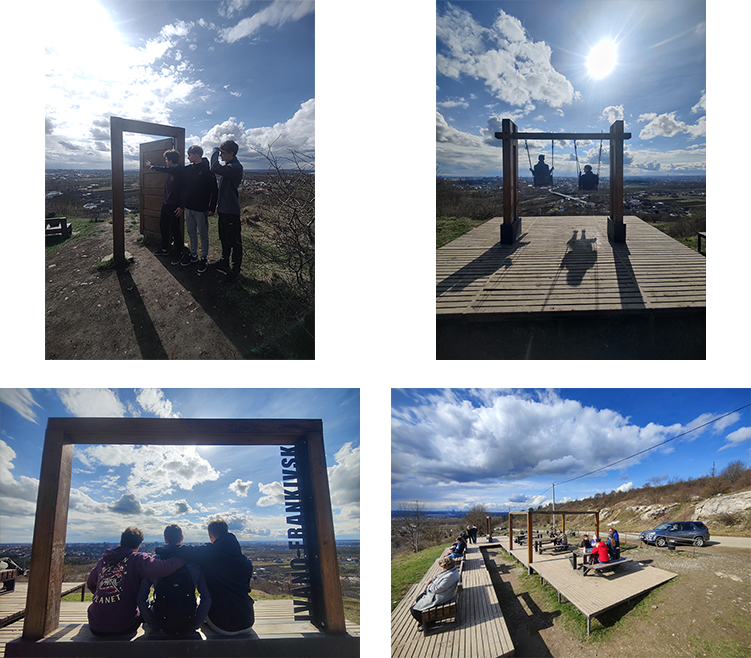

Вовчинецькі гори - комплексна пам'ятка природи
місцевого значення в Україні. Розташована в межах
території, підпорядкованій Івано-Франківській міській
раді Івано-Франківської області, при північно-східній
околиці села Вовчинець.
Площа - 30 га.
Статуса отриманий у 1997 році.
Перебуває у віданні Вовчинецької сільскої ради.